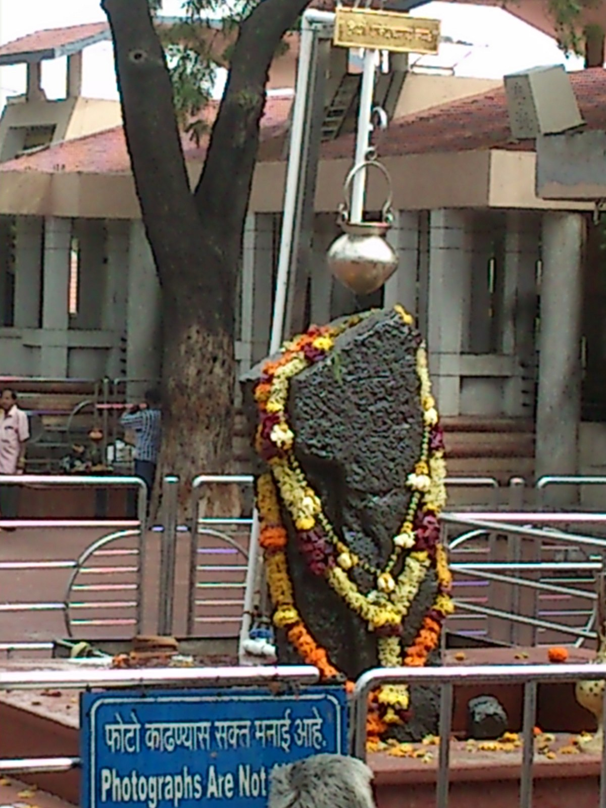

Ahmednagar Fort
A historic fort built in the 15th century.

Famous temple of Lord Shani located near Ahilyanagar.
A historic fort built in the 15th century.

Spiritual place and samadhi of Meher Baba.

Damdi Masjid is a historic mosque in Ahilyanagar built in the 16th century. It is famous for its beautiful stone architecture and historical importance.

Chand Bibi Mahal is a historic palace in Ahilyanagar. It is named after the brave queen Chand Bibi and is known for its historical importance.

Bagha Rauza is a historic tomb complex located in Ahilyanagar. It is known for its beautiful Islamic architecture and peaceful surroundings.

The Cavalry Tank Museum in Ahilyanagar displays many historic tanks and military vehicles used by the Indian Army. It is one of the few tank museums in Asia.